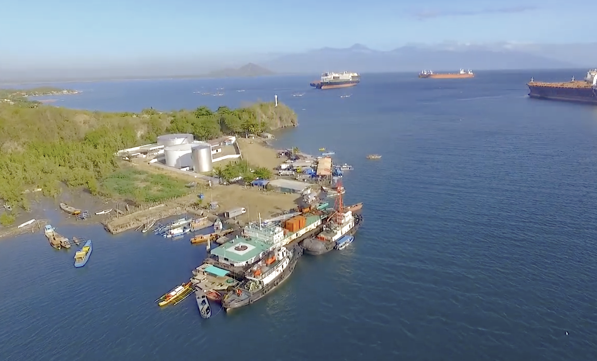
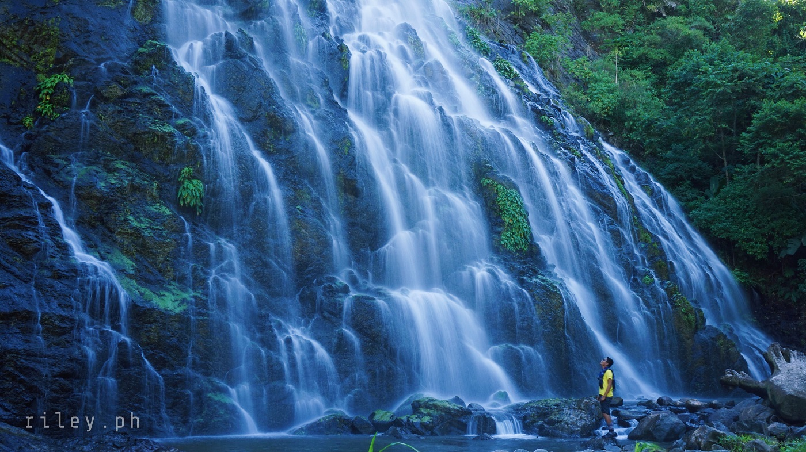
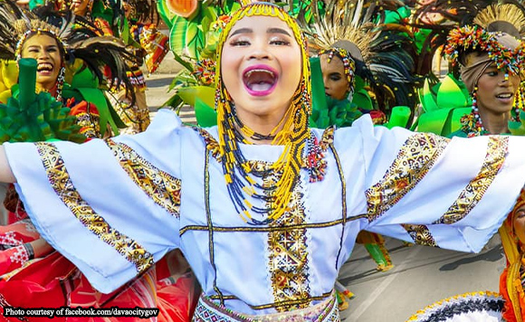
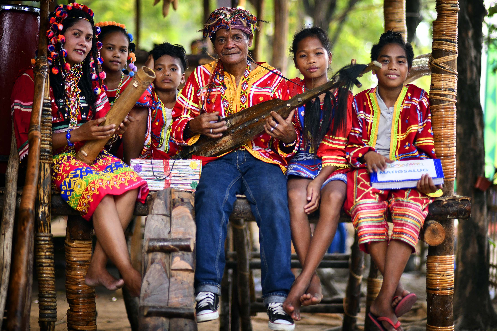
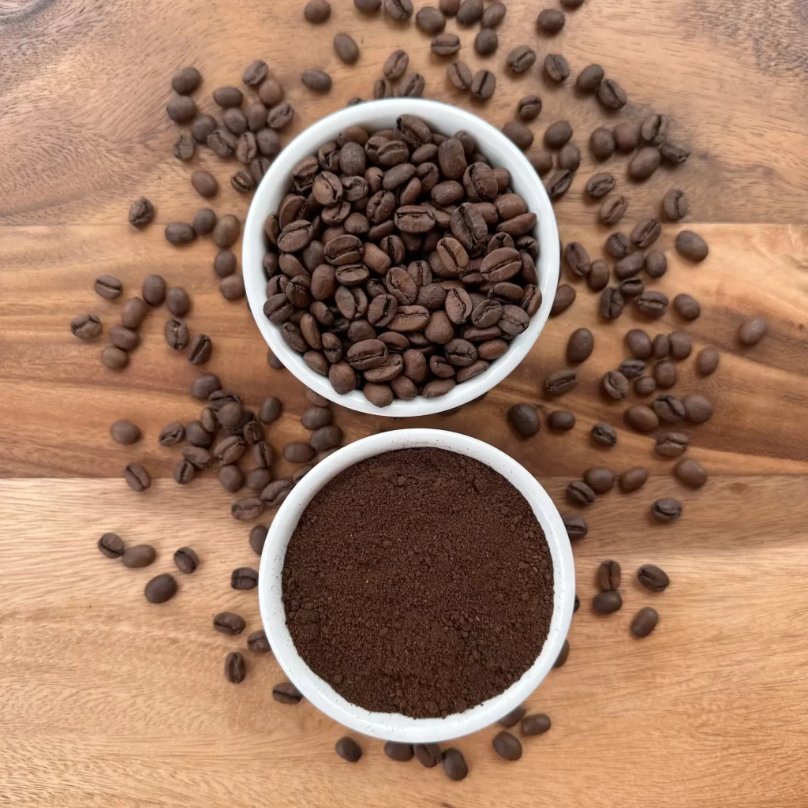
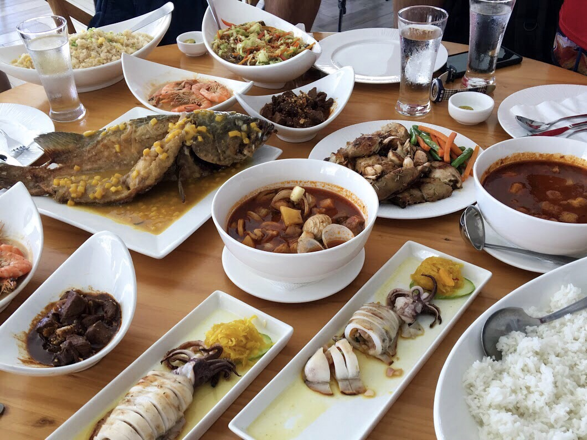

Explore Through Photos

Mt. Apo Summit
The highest peak in the Philippines, standing at 2,954 meters.

Passig Islet
A pristine white sand island surrounded by crystal-clear waters.

Malalag Bay
Tranquil coastal views along the shores of the Davao Gulf.

Camp Sabros
Cool highland retreat with stunning views and zipline adventures.

Digos City
The bustling capital city of Davao del Sur full of culture and commerce.

Hidden Waterfalls
Cascading falls tucked deep within Davao del Sur's lush forests.

Coastal Sunset
Golden hour along the shores of Davao del Sur's coastal municipalities.

Hudyaka Festival
A colorful celebration of the province's diverse cultural heritage.

Bagobo & B'laan Tribes
Rich ancestral traditions kept alive through art, music, and weaving.

Spelunking
Explore the mysterious cave systems hidden beneath the province.

Traditional Crafts
Intricate handwoven textiles and crafts passed down through generations.

Tropical Fruits
Fresh mangoes, bananas, and durian straight from local farms.

Highland Coffee
Premium Arabica coffee grown in the cool highlands of Kapatagan.

Local Cuisine
Authentic flavors and dishes unique to Davao del Sur's food culture.